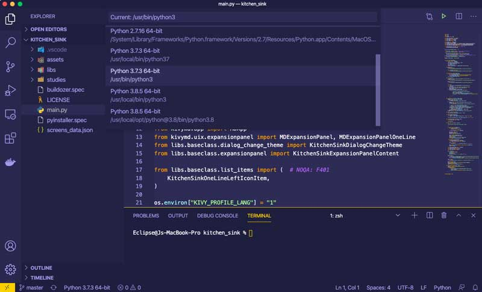

1. Acerca de Python
Python es un lenguaje de programación que ha logrado un gran reconocimiento y adopción en el mundo de la informática y la tecnología en general. Su popularidad radica en varios aspectos clave que lo hacen único y altamente deseable tanto para principiantes como para programadores experimentados. Una de las características más destacadas de Python es su sintaxis simple y legible. Su diseño se centra en la claridad y la facilidad de comprensión del código, lo que lo convierte en un lenguaje accesible incluso para aquellos que están comenzando en el mundo de la programación. El hecho de que Python utilice una sintaxis limpia, con una menor cantidad de caracteres especiales y una estructura basada en la indentación para definir bloques de código, facilita la lectura y comprensión del código, lo que hace que el proceso de desarrollo sea más eficiente y menos propenso a errores.

1.1 Historia de Python
Python es un lenguaje de programación creado por Guido van Rossum y lanzado por primera vez en 1991. Van Rossum diseñó Python con un enfoque en la legibilidad del código y la sintaxis clara, inspirado en parte por su experiencia con el lenguaje ABC. Inicialmente, Python ganó popularidad en la comunidad de desarrolladores gracias a su facilidad de uso y su capacidad para integrarse con otros lenguajes. A medida que evolucionaba, Python se convirtió en una herramienta poderosa tanto para la programación de scripts como para el desarrollo de aplicaciones complejas. La publicación de la versión 2.0 en 2000 y la posterior adopción de Python por parte de grandes empresas y organizaciones impulsaron su crecimiento exponencial. Con la llegada de Python 3 en 2008, se introdujeron mejoras significativas en el lenguaje, aunque la transición completa de la comunidad de usuarios llevó varios años.

1.2 Versiones de Python
Las versiones de Python se identifican por tres números X.Y.Z, donde X representa las grandes versiones (1, 2 y 3) con cambios significativos, como la introducción de Unicode en Python 2 y la separación entre Unicode y datos binarios en Python 3. Y corresponde a versiones importantes que introducen novedades sin romper la compatibilidad, con un ritmo de publicación cada octubre desde Python 3.8. Z indica versiones menores para correcciones de errores y seguridad durante cinco años de mantenimiento, con una publicación inicial cada dos meses y luego solo en forma de código fuente, con una última versión antes de dejar de ser mantenida. No hay planes para Python 4 hasta el momento.
